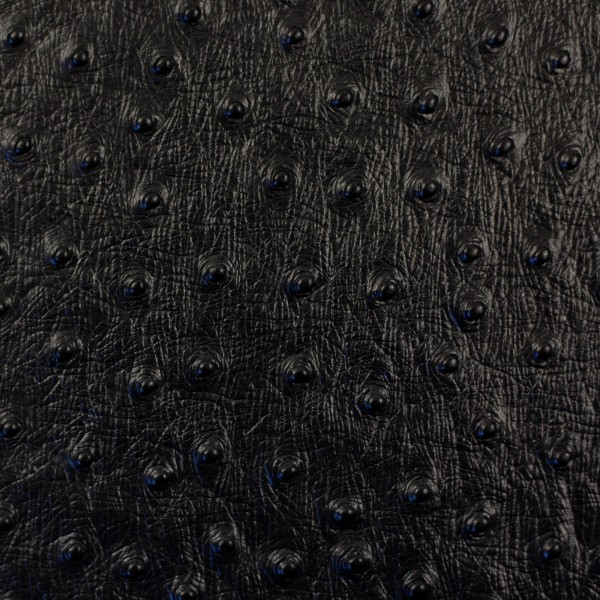

exhibit-Ostrich
オーストリッチ革の解説ページ
オーストリッチ革とは
- • オーストリッチ革は、ダチョウの革です。
- • 最大の特徴は、羽毛を抜いた跡にできる**丸い突起模様（クイルマーク）**で、独特の表情と高級感があります。
- • 見た目の個性だけでなく、比較的やわらかく、しなやかで、使い込むほどに味わいが増す革として知られています。
- • バッグ・財布・小物などで使われることが多く、部位によって模様の出方が異なります。
特徴
- • クイルマーク（羽根跡）による独特の表情
- • やわらかく、しなやかで手になじみやすい
- • 見た目に高級感・個性が出やすい
- • 比較的軽く、扱いやすい
- • 部位によって模様の密度や見え方が異なる（無地に近い部分もある）
用途
- • バッグ
- • 財布
- • 名刺入れ・カードケース
- • ベルト
- • 小物（ポーチ、キーケースなど）
- • 一部で靴やアクセントパーツにも使用
お手入れ
- • 柔らかい布でほこりをやさしく拭き取ってください。
- • 水分や汚れは放置せず、早めに乾いた布で軽く拭き取るのがおすすめです。
- • 保管時は直射日光・高温多湿を避け、型崩れしないように保管してください。
- • 革用クリームを使う場合は、目立たない場所で試してから少量ずつ使用してください。
- • 模様部分（クイルマーク）に汚れが入り込まないよう、日常的な軽いケアが有効です。
ワンポイント
- • オーストリッチ革は模様が印象的なので、全面使いで存在感を出すのはもちろん、差し込みで使っても高級感が出ます。
- • 同じオーストリッチでも部位によって表情がかなり変わるため、一点ごとの個体差を楽しめる革です。
Overview
- • Ostrich leather is leather made from ostrich skin.
- • Its most distinctive feature is the pattern of raised dots called quill marks, which are the follicle marks left where feathers grew.
- • In addition to its unique appearance, ostrich leather is known for being relatively soft, supple, and comfortable to handle, and it develops character with use.
- • It is commonly used for bags, wallets, and small leather goods, and the pattern varies depending on the part of the skin.
Features
- • Distinctive quill mark pattern (feather follicle marks)
- • Soft and supple, comfortable in hand
- • Luxurious and highly recognizable appearance
- • Relatively lightweight and easy to handle
- • Pattern density varies by section (some parts are smoother with fewer marks)
Uses
- • Bags
- • Wallets
- • Business card holders / card cases
- • Belts
- • Small leather goods (pouches, key cases, etc.)
- • Sometimes used for shoes or accent panels
Care
- • Gently wipe off dust with a soft cloth.
- • If it gets wet or dirty, wipe it promptly with a dry cloth and avoid leaving moisture on the surface.
- • Store away from direct sunlight, heat, and humidity, and help maintain its shape during storage.
- • If using leather cream, test on an inconspicuous area first and apply sparingly.
- • Light routine care helps prevent dirt from building up around the quill marks.
Tips
- • Because ostrich leather has a distinctive pattern, it works well both as a full-surface material for strong visual impact and as an accent material for a refined touch.
- • Different sections of the leather have different appearances, making each item visually unique.